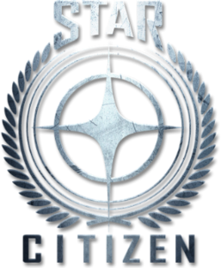
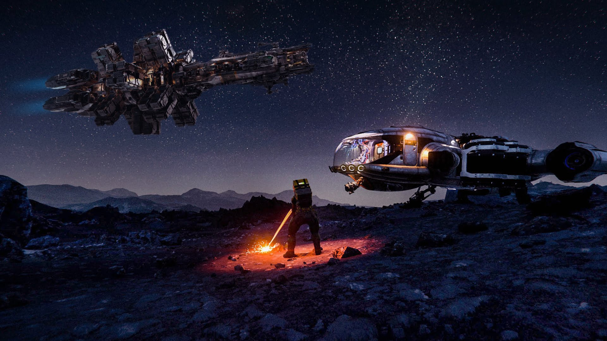
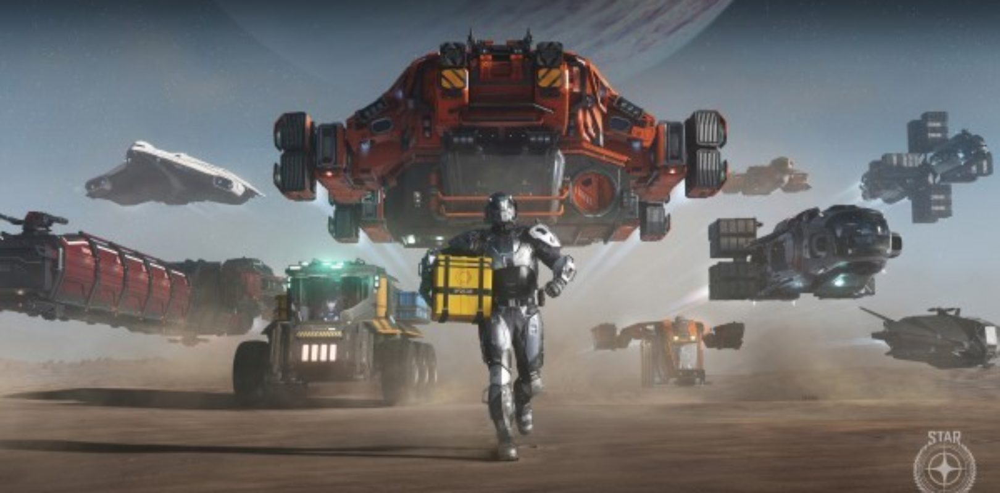
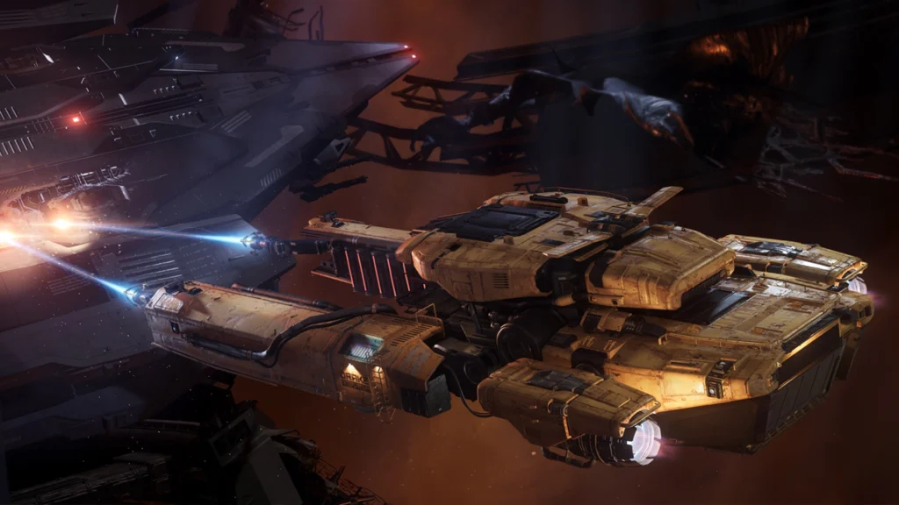
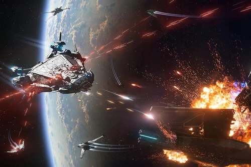
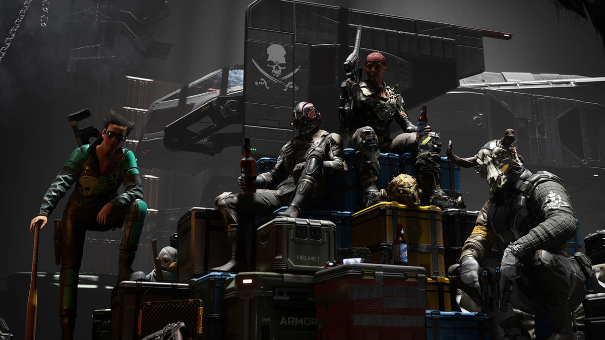
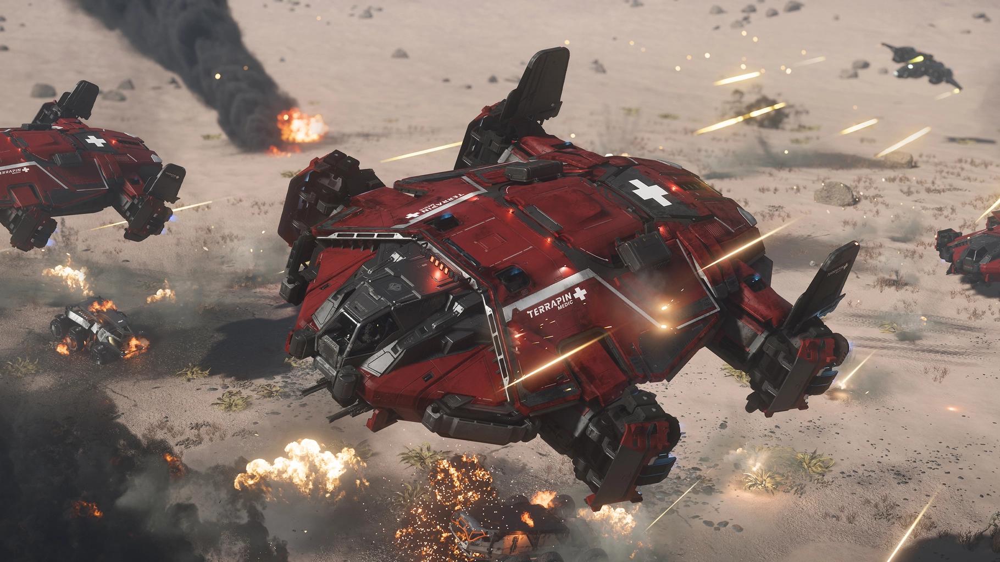

Star citizen inicio de la mano de cloud imperium games a traves de un kick starter en 2012 que recaudó 2M.
A partir de 2013 comenzaron a sacar "modulos" para que sus jugadores experimentaran con lo que ellos iban construyendo
hasta que en 2017 sacaron el acceso anticipado que sigue abierto hasta dia de hoy.
En 2026 la suma recaudada a traves de la compra del juego y de su negocio mas prospero la compra de naves han recaudado mas de 1k Millones de dolares.
Star citizen es un mmo espacial abierto y realista, en el que tu defines que quieres hacer, puedes ser un mercenario, un caza recomensas, un minero, un comerciante, un pirata espacial, etc...
Al ser un juego espacial como imaginareis viajareis entre distintos sistemas solares (3 por ahora) y distintos planetas dentro de cada sistema solar, estos planetas son totalmente jugables
sin pantallas de carga ni espera de nada, eliges que misión quieres hacer y te mueves, o no, simplemente puedes moverte donde quieras y cuando quieras.
El juego tiene su propio sistema económico con el que puedes jugar en la venta de materiales de mineria y consiguir UEC (abreviatura de creditos de la tierra unida).
Cada mision tipo de mision tiene distintos niveles, es decir un mercenario que entra no tiene la suficiente reputación como otro que lleve 100 misiones realizas, al este ultimo tener mas reputación
sus misiones serán mejor recompensadas en UEC pero tambien serán mas complejas haciendo necesario incluso la ayuda de compañeros para poder completarlas.
Star Citizen tambien cuenta con un modo "campaña" llamado escuadron 42 el cual todavia no ha salido a la luz pero tiene previsto hacerlo este 2026 (todo dependerá de GTA6), escuadron 42 es un modo de un jugador
que cuenta la historia de un joven marine alistándose en la aramda del Impero de la tierra unida, por ahora está prevista que dure 20h y tenga 70 misiones y 2 capítulos extras que llegaran mas adelante.
En star citizen no existe una clase tradicional como en cualquier rpg clasico, en su lugar tu profesión viene determinada por tu nave y las herramientas que equipas pudiendo cambiar de rol en cualquier momento.
Las principales carreras activas en el momento son:

Buscar betas de minerales raros en asteroides, planetas o lunas usando laseres mineros. Se puede hacer a pie, en vehiculos terrestres y en naves.

Comprar materias primas baratas y venderlas caras en las metrópolis. Arriesgado debido a los piratas espaciales.

Desmantelar naves destruidas o abandonadas utilizando laseres para recuperar materiales estructurales o componentes para revenderlos posteriormente

Aceptar misiones del sistema legal para destruir naves criminales (IA o Jugadores) o asaltar bunkers enemigos a pie.

Interceptar cargueros de otros jugadores, extorsionarlos o robar su mercancia para venderla en mercados negros. Al ir al margen de la ley obtendras nivel de busqueda, si mueres o eres capturado serás
llevado a la carcel donde deberas de esperar horas reales para poder salir o rebajar tu condena realizando trabajos de mineria o escapandote a traves de unos tuneles y unas cuevas ocultas.

Sanar y rescatar a otros jugadores caidos usando pistolas médicas o naves ambulancia, respondiendo a balizas de auxilio reales en tiempo real.
Cuando el juego funciona ofrece momentos que simplemente no existen en ningun otro título de la industria, descender a planetas, viajes en formación con amigos, asaltar estaciones espaciales y mas.
El desarrollo de la tecnologia de Server Meshing es elogiado por analistas tecnicos como un hito que redifine la historia de los servidores dinámicos en juegos masivos.
No es pay to win.
Al tratarse de un Alpha todavia el juego sufre cantidad de bugs, problemas de inestabilidad y rendimientos severos pudiendo perder horas de preparación y equipamiento sin recibir progreso a cambio.
Hay wipes que implican que jugadores casuales que no invierten dinero real en naves u otros productos tengan que volver a farmear naves y equipamiento que se ganaron con su esfuerzo haciendolo desesperante para jugadores casuales.